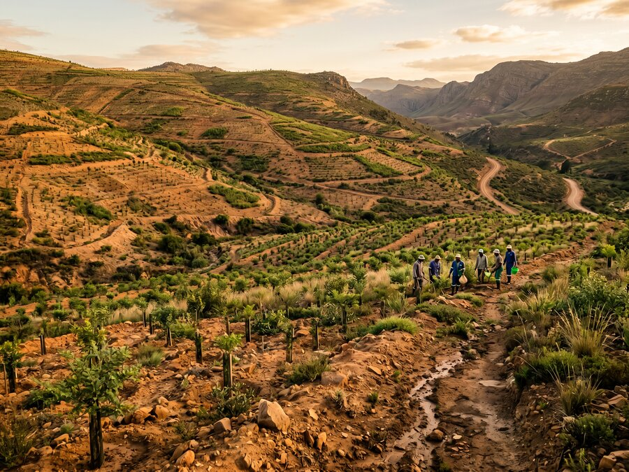
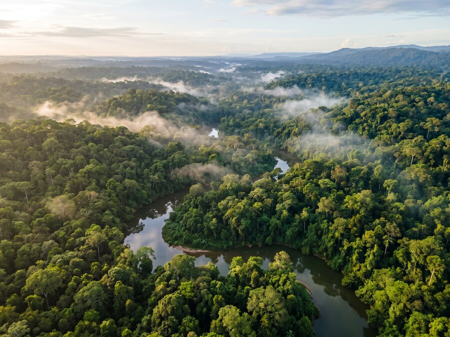
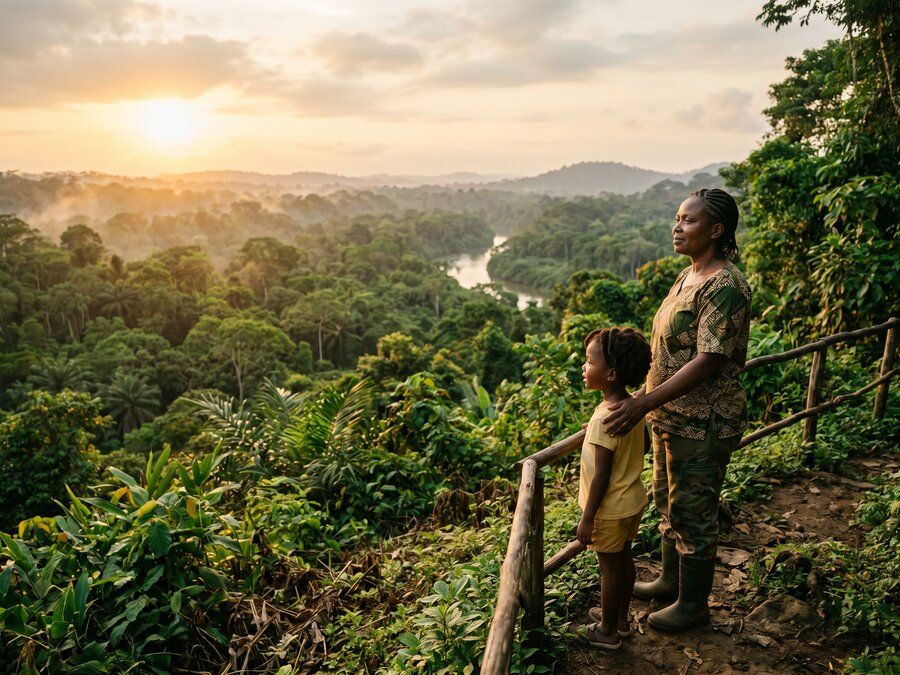

About Us
Mission & Vision
Our Mission
Restore Ecosystems.
Uplift Communities.
Our mission is to restore degraded ecosystems and uplift communities by developing science-based, regenerative environmental solutions that generate measurable social and ecological impact.
We work with local partners, governments, and investors to implement scalable restoration, sustainable land-use, and responsible economic development initiatives that enhance biodiversity, improve livelihoods, and catalyse long-term climate resilience.


Our Vision
Technology & Nature in Synergy
Our vision is a world where technological advancement and environmental regeneration operate in synergy, enabling societies to grow while strengthening the ecosystems that sustain them.
We believe humanity can move beyond coexistence toward responsible custodianship of the planet, using innovation, data, and long-term planning to regenerate landscapes, support communities, and secure a resilient future for generations to come.
What Commitment Means to Us
Making the right choices — usually the hard ones
For us, commitment means making the right choices, and that means (usually), the hard ones.
It means designing projects with the assumption that we will be accountable to the land, the people, and the outcomes long after the first phase is complete. We do not approach restoration as a temporary intervention or a branding exercise. If we commit to a landscape, we commit to its long-term health and viability.
Commitment shows up in how we work. We spend the time upfront to understand ecosystems properly, to plan restoration carefully, and to build economic frameworks that allow communities to remain invested in the success of the land over time. We prioritise durability over speed and systems over short-term results.
It also means being honest about complexity. Ecosystems change. Communities evolve. Data improves. Our commitment includes the responsibility to monitor, learn, and adapt rather than forcing rigid models onto living systems.
Ultimately, commitment means custodianship. We see our role as helping design and steward environments where human development strengthens the natural world instead of depleting it. That requires patience, long-term thinking, and the willingness to stay involved long after the work becomes less visible.
Our Promise
A Promise to Future Generations
Our promise is not to perfection, but to responsibility. We commit to designing and stewarding projects that strengthen ecosystems over time, support the communities that depend on them, and leave landscapes more resilient than we found them.
We recognise that the decisions made today will shape the environmental and economic realities inherited by the next generation. That understanding guides how we plan, how we measure impact, and how long we stay involved. Short-term solutions are not enough. The work must endure.
Our promise is to approach restoration with patience, humility, and scientific rigour. To use technology as a tool for understanding and accountability, not control. And to treat land, water, and biodiversity as living systems that require care across decades, not development cycles.
Above all, we promise to act as responsible custodians of the planet we are on — designing systems where human progress and environmental health advance together, so that future generations inherit not only opportunity, but a thriving and resilient natural world.
